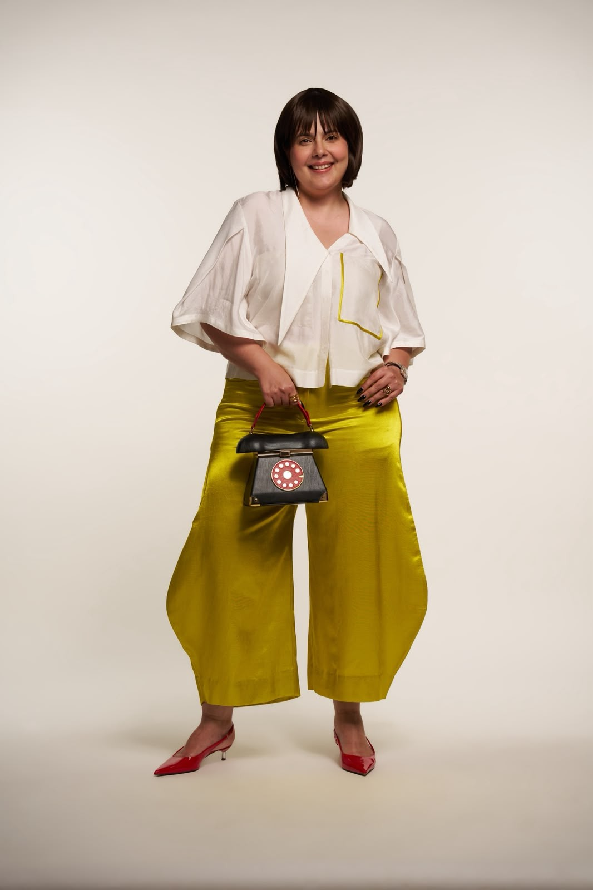

THE CURVE EDIT05 PHOTOGRAPHS + FILM

01 / 06
SunshinePersonal purchase enquiry
BUY IT NOW Clothing that lives with you.
Considered silhouettes. Personal expression. Your own way of being.

Considered silhouettes. Personal expression. Your own way of being.
Prepare a personal enquiry about your look. Copy your request or open an email draft; this site does not submit it automatically.
Enquiries are prepared as email drafts to info@shenerian.com. The website does not send or save requests until CMS integration.
A shortlist saved locally in your browser; no sign-in required.
Explore Collections ↗
Look reference
An editorial presentation of the look.
1 / 12
The SHANERYN film will appear here once the approved video is available.